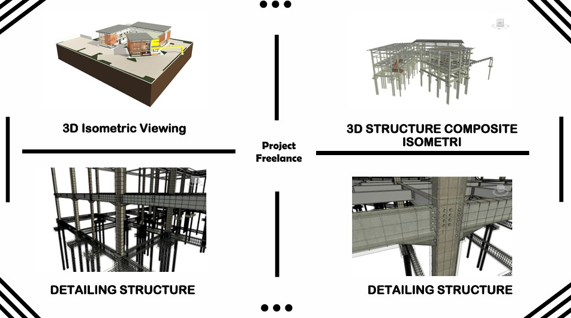
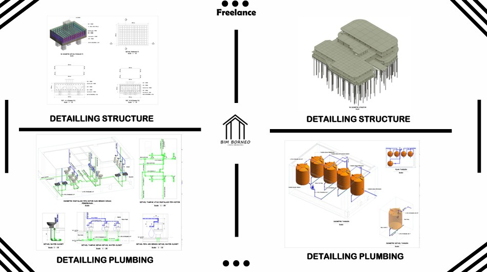

Highlight Portofolio Proyek
Highlight Video Proyek Jalan Dengan Implementasi BIM 3D, 4D, DAN 5D
Preview hasil implementasi BIM 3D, 4D, DAN 5D proyek yang sudah dikerjakan.
Highlight Video Drone dengan overlay Trase Rencana Pembangunan Jalan
Preview hasil editing video drone dengan overlay trase rencana pembangunan jalan .
Highlight Pengolahan Data LiDAR
Preview hasil pengolahan data LiDAR menggunakan beberapa software GIS .

PROYEK PEMBANGUNAN JBH SEKSI 6A IKN, PENAJAM PASER UTARA, KALIMANTAN TIMUR
Integrasi 3D Model to Schedule (BIM 4D) menggunakan Navisworks Manage.

PROYEK PERENCANAAN GEDUNG DINAS KESEHATAN (DINKES) BERAU, KALIMANTAN TIMUR
BIM 3D Detail Struktur, BIM 3D Detail Architecture, Quantity Take Off, Detail Engineering Design

PROYEK PERENCANAAN GEDUNG 4 DINAS BERAU, KALIMANTAN TIMUR
BIM 3D Detail Struktur, BIM 3D Detail Plumbing, Quantity Take Off, Detail Engineering Design